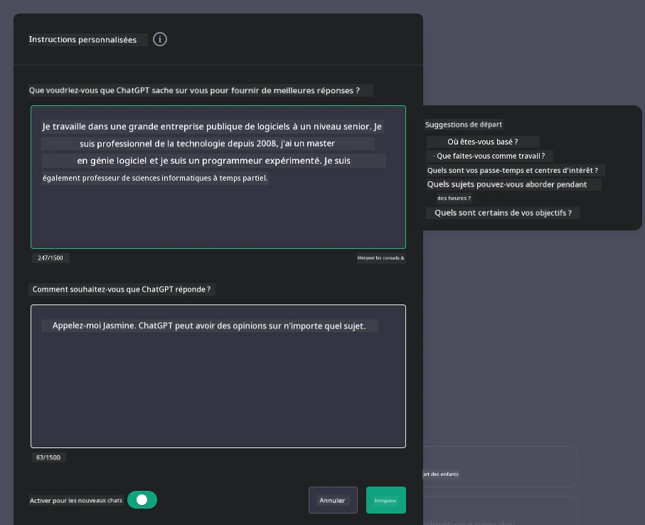
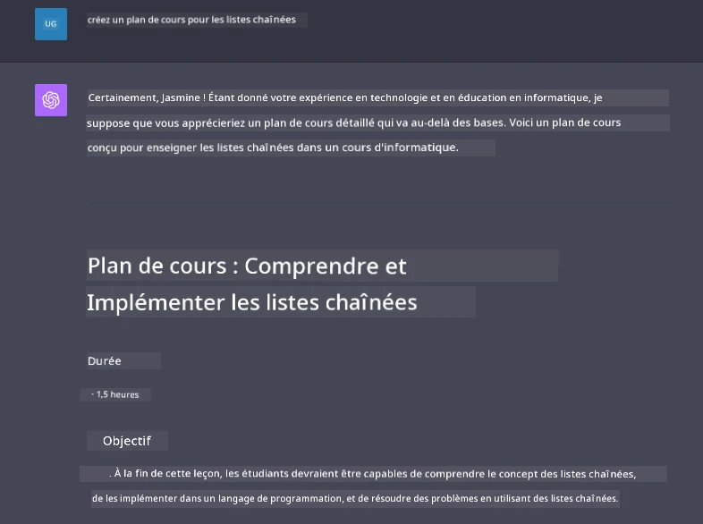

Construire des applications de chat alimentées par l'IA générative#
(Cliquez sur l'image ci-dessus pour visionner la vidéo de cette leçon)
Maintenant que nous avons vu comment créer des applications de génération de texte, intéressons-nous aux applications de chat.
Les applications de chat sont devenues une partie intégrante de notre quotidien, offrant bien plus qu'un simple moyen de conversation informelle. Elles jouent un rôle essentiel dans le service client, le support technique et même dans les systèmes de conseil sophistiqués. Il est probable que vous ayez récemment reçu de l'aide d'une application de chat. À mesure que nous intégrons des technologies plus avancées comme l'IA générative dans ces plateformes, leur complexité augmente, tout comme les défis qu'elles posent.
Certaines questions auxquelles nous devons répondre sont :
- Créer l'application. Comment construire et intégrer efficacement ces applications alimentées par l'IA pour des cas d'utilisation spécifiques ?
- Surveillance. Une fois déployées, comment pouvons-nous surveiller et garantir que les applications fonctionnent au plus haut niveau de qualité, tant en termes de fonctionnalité que de respect des six principes de l'IA responsable ?
Alors que nous avançons dans une ère définie par l'automatisation et les interactions fluides entre humains et machines, comprendre comment l'IA générative transforme la portée, la profondeur et l'adaptabilité des applications de chat devient essentiel. Cette leçon examinera les aspects de l'architecture qui soutiennent ces systèmes complexes, explorera les méthodologies pour les adapter à des tâches spécifiques à un domaine et évaluera les métriques et considérations pertinentes pour garantir un déploiement responsable de l'IA.
Introduction#
Cette leçon couvre :
- Les techniques pour construire et intégrer efficacement des applications de chat.
- Comment appliquer la personnalisation et l'adaptation aux applications.
- Les stratégies et considérations pour surveiller efficacement les applications de chat.
Objectifs d'apprentissage#
À la fin de cette leçon, vous serez capable de :
- Décrire les considérations pour construire et intégrer des applications de chat dans des systèmes existants.
- Personnaliser les applications de chat pour des cas d'utilisation spécifiques.
- Identifier les métriques clés et les considérations pour surveiller et maintenir efficacement la qualité des applications de chat alimentées par l'IA.
- Garantir que les applications de chat utilisent l'IA de manière responsable.
Intégrer l'IA générative dans les applications de chat#
Améliorer les applications de chat grâce à l'IA générative ne consiste pas seulement à les rendre plus intelligentes ; il s'agit d'optimiser leur architecture, leurs performances et leur interface utilisateur pour offrir une expérience utilisateur de qualité. Cela implique d'examiner les bases architecturales, les intégrations API et les considérations d'interface utilisateur. Cette section vise à vous offrir une feuille de route complète pour naviguer dans ces paysages complexes, que vous les intégriez dans des systèmes existants ou que vous les construisiez comme des plateformes autonomes.
À la fin de cette section, vous serez équipé des compétences nécessaires pour construire et intégrer efficacement des applications de chat.
Chatbot ou application de chat ?#
Avant de plonger dans la création d'applications de chat, comparons les "chatbots" aux "applications de chat alimentées par l'IA", qui remplissent des rôles et des fonctionnalités distincts. Le principal objectif d'un chatbot est d'automatiser des tâches conversationnelles spécifiques, comme répondre à des questions fréquemment posées ou suivre un colis. Il est généralement régi par une logique basée sur des règles ou des algorithmes d'IA complexes. En revanche, une application de chat alimentée par l'IA est un environnement beaucoup plus vaste conçu pour faciliter diverses formes de communication numérique, telles que les discussions textuelles, vocales et vidéo entre utilisateurs humains. Sa caractéristique principale est l'intégration d'un modèle d'IA générative qui simule des conversations nuancées et humaines, générant des réponses basées sur une grande variété d'entrées et d'indices contextuels. Une application de chat alimentée par l'IA générative peut engager des discussions ouvertes, s'adapter à des contextes conversationnels évolutifs et même produire des dialogues créatifs ou complexes.
Le tableau ci-dessous présente les principales différences et similitudes pour nous aider à comprendre leurs rôles uniques dans la communication numérique.
| Chatbot | Application de chat alimentée par l'IA générative |
|---|---|
| Axé sur des tâches et basé sur des règles | Sensible au contexte |
| Souvent intégré dans des systèmes plus vastes | Peut héberger un ou plusieurs chatbots |
| Limité à des fonctions programmées | Intègre des modèles d'IA générative |
| Interactions spécialisées et structurées | Capable de discussions ouvertes |
Exploiter des fonctionnalités préconstruites avec des SDK et des API#
Lors de la création d'une application de chat, une excellente première étape consiste à évaluer ce qui existe déjà. Utiliser des SDK et des API pour construire des applications de chat est une stratégie avantageuse pour diverses raisons. En intégrant des SDK et des API bien documentés, vous positionnez stratégiquement votre application pour un succès à long terme, en répondant aux préoccupations de scalabilité et de maintenance.
- Accélère le processus de développement et réduit les frais généraux : S'appuyer sur des fonctionnalités préconstruites plutôt que sur le processus coûteux de les développer soi-même vous permet de vous concentrer sur d'autres aspects de votre application, comme la logique métier.
- Meilleures performances : En construisant des fonctionnalités à partir de zéro, vous finirez par vous demander "Comment cela évolue-t-il ? Cette application est-elle capable de gérer un afflux soudain d'utilisateurs ?" Les SDK et API bien entretenus ont souvent des solutions intégrées pour ces préoccupations.
- Maintenance simplifiée : Les mises à jour et améliorations sont plus faciles à gérer, car la plupart des API et SDK nécessitent simplement une mise à jour de la bibliothèque lorsqu'une nouvelle version est publiée.
- Accès à des technologies de pointe : Exploiter des modèles qui ont été affinés et entraînés sur des ensembles de données étendus offre à votre application des capacités de langage naturel.
L'accès aux fonctionnalités d'un SDK ou d'une API implique généralement d'obtenir l'autorisation d'utiliser les services fournis, souvent via une clé unique ou un jeton d'authentification. Nous utiliserons la bibliothèque Python OpenAI pour explorer à quoi cela ressemble. Vous pouvez également l'essayer par vous-même dans le notebook pour OpenAI ou le notebook pour Azure OpenAI Services de cette leçon.
import os
from openai import OpenAI
API_KEY = os.getenv("OPENAI_API_KEY","")
client = OpenAI(
api_key=API_KEY
)
chat_completion = client.chat.completions.create(model="gpt-3.5-turbo", messages=[{"role": "user", "content": "Suggest two titles for an instructional lesson on chat applications for generative AI."}])
L'exemple ci-dessus utilise le modèle GPT-3.5 Turbo pour compléter l'invite, mais notez que la clé API est définie avant de le faire. Vous obtiendriez une erreur si vous ne définissiez pas la clé.
Expérience utilisateur (UX)#
Les principes généraux de l'UX s'appliquent aux applications de chat, mais voici quelques considérations supplémentaires qui deviennent particulièrement importantes en raison des composants d'apprentissage automatique impliqués.
- Mécanisme pour traiter l'ambiguïté : Les modèles d'IA générative génèrent parfois des réponses ambiguës. Une fonctionnalité permettant aux utilisateurs de demander des clarifications peut être utile en cas de problème.
- Rétention du contexte : Les modèles d'IA générative avancés ont la capacité de se souvenir du contexte dans une conversation, ce qui peut être un atout nécessaire pour l'expérience utilisateur. Donner aux utilisateurs la possibilité de contrôler et de gérer le contexte améliore l'expérience utilisateur, mais introduit le risque de conserver des informations sensibles. Les considérations sur la durée de conservation de ces informations, comme l'introduction d'une politique de rétention, peuvent équilibrer le besoin de contexte et la confidentialité.
- Personnalisation : Avec la capacité d'apprendre et de s'adapter, les modèles d'IA offrent une expérience individualisée à un utilisateur. Adapter l'expérience utilisateur grâce à des fonctionnalités comme les profils utilisateur non seulement permet à l'utilisateur de se sentir compris, mais l'aide également dans sa recherche de réponses spécifiques, créant une interaction plus efficace et satisfaisante.
Un exemple de personnalisation est les paramètres "Instructions personnalisées" dans ChatGPT d'OpenAI. Cela vous permet de fournir des informations sur vous-même qui peuvent être un contexte important pour vos invites. Voici un exemple d'instruction personnalisée.

Ce "profil" invite ChatGPT à créer un plan de cours sur les listes chaînées. Notez que ChatGPT prend en compte que l'utilisateur peut vouloir un plan de cours plus approfondi en fonction de son expérience.

Cadre de message système de Microsoft pour les modèles de langage étendu#
Microsoft a fourni des conseils pour rédiger des messages système efficaces lors de la génération de réponses à partir de modèles de langage étendu, décomposés en 4 domaines :
- Définir pour qui est le modèle, ainsi que ses capacités et ses limites.
- Définir le format de sortie du modèle.
- Fournir des exemples spécifiques qui démontrent le comportement attendu du modèle.
- Fournir des garde-fous comportementaux supplémentaires.
Accessibilité#
Qu'un utilisateur ait des déficiences visuelles, auditives, motrices ou cognitives, une application de chat bien conçue doit être utilisable par tous. La liste suivante détaille les fonctionnalités spécifiques visant à améliorer l'accessibilité pour divers types de handicaps.
- Fonctionnalités pour les déficiences visuelles : Thèmes à contraste élevé et texte redimensionnable, compatibilité avec les lecteurs d'écran.
- Fonctionnalités pour les déficiences auditives : Fonctions de synthèse vocale et de reconnaissance vocale, indices visuels pour les notifications audio.
- Fonctionnalités pour les déficiences motrices : Prise en charge de la navigation au clavier, commandes vocales.
- Fonctionnalités pour les déficiences cognitives : Options de langage simplifié.
Personnalisation et ajustement pour les modèles de langage spécifiques à un domaine#
Imaginez une application de chat qui comprend le jargon de votre entreprise et anticipe les requêtes spécifiques de sa base d'utilisateurs. Il existe quelques approches qui méritent d'être mentionnées :
- Exploiter les modèles DSL. DSL signifie langage spécifique au domaine. Vous pouvez exploiter un modèle DSL, entraîné sur un domaine spécifique, pour comprendre ses concepts et scénarios.
- Appliquer un ajustement. L'ajustement est le processus de formation supplémentaire de votre modèle avec des données spécifiques.
Personnalisation : Utiliser un DSL#
Exploiter des modèles de langage spécifiques à un domaine (modèles DSL) peut améliorer l'engagement des utilisateurs en fournissant des interactions spécialisées et contextuellement pertinentes. C'est un modèle qui est entraîné ou ajusté pour comprendre et générer du texte lié à un domaine, une industrie ou un sujet spécifique. Les options pour utiliser un modèle DSL peuvent varier entre en entraîner un à partir de zéro, utiliser des modèles préexistants via des SDK et des API, ou appliquer un ajustement, qui consiste à adapter un modèle pré-entraîné à un domaine spécifique.
Personnalisation : Appliquer un ajustement#
L'ajustement est souvent envisagé lorsqu'un modèle pré-entraîné ne répond pas aux attentes dans un domaine spécialisé ou une tâche spécifique.
Par exemple, les questions médicales sont complexes et nécessitent beaucoup de contexte. Lorsqu'un professionnel de santé diagnostique un patient, il se base sur divers facteurs tels que le mode de vie ou les conditions préexistantes, et peut même s'appuyer sur des revues médicales récentes pour valider son diagnostic. Dans de tels scénarios nuancés, une application de chat alimentée par une IA généraliste ne peut pas être une source fiable.
Scénario : une application médicale#
Considérons une application de chat conçue pour aider les praticiens médicaux en fournissant des références rapides aux directives de traitement, aux interactions médicamenteuses ou aux dernières découvertes de recherche.
Un modèle généraliste pourrait être adéquat pour répondre à des questions médicales de base ou fournir des conseils généraux, mais il pourrait rencontrer des difficultés dans les cas suivants :
- Cas très spécifiques ou complexes. Par exemple, un neurologue pourrait demander à l'application : "Quelles sont les meilleures pratiques actuelles pour gérer l'épilepsie résistante aux médicaments chez les patients pédiatriques ?"
- Manque d'avancées récentes. Un modèle généraliste pourrait avoir du mal à fournir une réponse actuelle qui intègre les avancées les plus récentes en neurologie et pharmacologie.
Dans de tels cas, ajuster le modèle avec un ensemble de données médicales spécialisé peut améliorer considérablement sa capacité à traiter ces questions médicales complexes de manière plus précise et fiable. Cela nécessite l'accès à un ensemble de données large et pertinent qui représente les défis et les questions spécifiques au domaine à traiter.
Considérations pour une expérience de chat alimentée par l'IA de haute qualité#
Cette section décrit les critères des applications de chat "de haute qualité", qui incluent la capture de métriques exploitables et le respect d'un cadre qui utilise la technologie de l'IA de manière responsable.
Métriques clés#
Pour maintenir la performance de haute qualité d'une application, il est essentiel de suivre des métriques clés et des considérations. Ces mesures permettent non seulement de garantir le bon fonctionnement de l'application, mais aussi d'évaluer la qualité du modèle d'IA et de l'expérience utilisateur. Voici une liste qui couvre les métriques de base, d'IA et d'expérience utilisateur à prendre en compte.
| Métrique | Définition | Considérations pour le développeur de chat |
|---|---|---|
| Disponibilité | Mesure le temps pendant lequel l'application est opérationnelle et accessible aux utilisateurs. | Comment minimiser les temps d'arrêt ? |
| Temps de réponse | Temps nécessaire à l'application pour répondre à une requête utilisateur. | Comment optimiser le traitement des requêtes pour améliorer le temps de réponse ? |
| Précision | Le ratio des prédictions positives correctes par rapport au nombre total de prédictions positives. | Comment valider la précision de votre modèle ? |
| Rappel (sensibilité) | Le ratio des prédictions positives correctes par rapport au nombre réel de positifs. | Comment mesurer et améliorer le rappel ? |
| Score F1 | Moyenne harmonique de la précision et du rappel, qui équilibre le compromis entre les deux. | Quel est votre score F1 cible ? Comment équilibrer précision et rappel ? |
| Perplexité | Mesure dans quelle mesure la distribution de probabilité prédite par le modèle s'aligne avec la distribution réelle des données. | Comment minimiser la perplexité ? |
| Métriques de satisfaction utilisateur | Mesure la perception de l'utilisateur vis-à-vis de l'application. Souvent capturée via des enquêtes. | À quelle fréquence collecterez-vous les retours des utilisateurs ? Comment vous adapterez-vous en fonction de ces retours ? |
| Taux d'erreur | Taux auquel le modèle commet des erreurs dans la compréhension ou la production. | Quelles stratégies avez-vous en place pour réduire les taux d'erreur ? |
| Cycles de réentraînement | Fréquence à laquelle le modèle est mis à jour pour intégrer de nouvelles données et idées. | À quelle fréquence réentraînerez-vous le modèle ? Qu'est-ce qui déclenche un cycle de réentraînement ? |
| Détection d'anomalies | Outils et techniques pour identifier des schémas inhabituels qui ne correspondent pas au comportement attendu. | Comment allez-vous réagir face aux anomalies ? |
Mettre en œuvre des pratiques d'IA responsable dans les applications de chat#
L'approche de Microsoft en matière d'IA responsable a identifié six principes qui devraient guider le développement et l'utilisation de l'IA. Voici les principes, leur définition, ainsi que les éléments à considérer pour un développeur de chat et les raisons pour lesquelles ils sont importants.
| Principes | Définition de Microsoft | Considérations pour le développeur de chat | Pourquoi c'est important |
|---|---|---|---|
| Équité | Les systèmes d'IA doivent traiter toutes les personnes de manière équitable. | Assurez-vous que l'application de chat ne discrimine pas en fonction des données utilisateur. | Pour instaurer la confiance et l'inclusivité parmi les utilisateurs ; évite les conséquences juridiques. |
| Fiabilité et sécurité | Les systèmes d'IA doivent fonctionner de manière fiable et sûre. | Mettez en œuvre des tests et des mécanismes de sécurité pour minimiser les erreurs et les risques. | Garantit la satisfaction des utilisateurs et prévient les dommages potentiels. |
| Confidentialité et sécurité | Les systèmes d'IA doivent être sécurisés et respecter la vie privée. | Mettez en place des mesures de cryptage et de protection des données solides. | Pour protéger les données sensibles des utilisateurs et se conformer aux lois sur la confidentialité. |
| Inclusivité | Les systèmes d'IA doivent permettre à tout le monde de participer et d'interagir. | Concevez une interface utilisateur/expérience utilisateur accessible et facile à utiliser pour des publics divers. | Garantit qu'un large éventail de personnes peut utiliser l'application efficacement. |
| Transparence | Les systèmes d'IA doivent être compréhensibles. | Fournissez une documentation claire et des explications sur les réponses de l'IA. | Les utilisateurs sont plus susceptibles de faire confiance à un système s'ils comprennent comment les décisions sont prises. |
| Responsabilité | Les personnes doivent être responsables des systèmes d'IA. | Établissez un processus clair pour auditer et améliorer les décisions de l'IA. | Permet une amélioration continue et des mesures correctives en cas d'erreurs. |
Devoir#
Voir devoir. Il vous guidera à travers une série d'exercices allant de l'exécution de vos premières invites de chat, à la classification et au résumé de texte, et plus encore. Notez que les devoirs sont disponibles dans différents langages de programmation !
Excellent travail ! Continuez votre parcours#
Après avoir terminé cette leçon, consultez notre collection d'apprentissage sur l'IA générative pour continuer à approfondir vos connaissances sur l'IA générative !
Rendez-vous à la leçon 8 pour découvrir comment commencer à créer des applications de recherche !